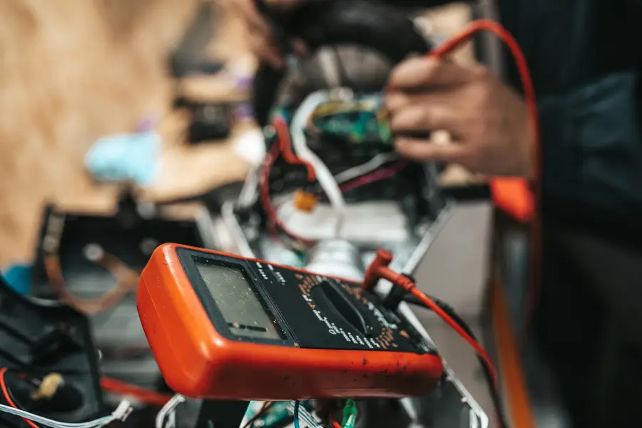

Business & Marketing Consulting
Spring Hill, FL
Your business. Your people. Your income. Your next move.
Sit down with people who have grown companies from a first $100K to tens of millions — and leave with a clear direction for the whole business, not just the marketing.
Miles already driven
We have sat at the table with small local businesses, fast-growing companies and organizations worth hundreds of millions. The road looks different at every size. The questions are surprisingly familiar.
Grew
$100K →to $500KAnnual revenue, multiplied five times over.Grew
$300K →to $12–18MFrom $300K a year to between $12 and $18 million.Revenue
Up to $20MCompanies running at up to $20 million a year.Worth
Valued at $400MOrganizations valued at $400 million — franchises included.Every exit on the route
Marketing is where most owners start, and it is where we are strongest. But more customers only help a business that can deliver for them, staff for them and profit from them. So we look at all of it.
Exit 1
How customers find you, why they choose you, and how to bring in more of the right ones — without wasting a dollar on the wrong ones.
Exit 2
Where the business is going, what to focus on first, and what to stop doing.
Exit 3
How the work actually gets done — systems, suppliers, scheduling and the bottlenecks that cost you.
Exit 4
What happens after the sale, and whether it brings customers back.
Exit 5
Who to hire, how to lead them, and how to build a team that runs without you in the room.
Exit 6
What you charge, what you keep, and how to grow the number that matters.
Exit 7
Where artificial intelligence can save you time and money today — and how to start using it.
Exit 8
How the business looks, sounds and is talked about when you are not there.
Any Exit
If it is part of running your business, it is on the table. Bring it to us →
The session
Running a business means wearing every hat at once — and it is hard to see the road when you are the one driving. A session gives you an hour off the wheel with someone who has seen where these roads go.
We listen first. Then we ask the questions nobody around you is asking, look honestly at what is working and what is not, and talk through the options in plain language.
You leave with clarity, a plan — and a renewed sense of purpose for the business you built.
Every road, every industry
From the shop floor to the showroom, from the first product to the franchise network — we have worked alongside businesses in almost every kind of industry.

Auto & Trades…and many more. If you’re in business, you’re on the map.
Exit 7 · Artificial intelligence
Everyone is talking about AI. Very few owners have had someone sit down and show them where it actually fits in their business.
We will walk you through the areas where AI can help today, what it can and can’t do, and how to start — and we can teach you and your team to use it with confidence.
Pricing
A fair rate for a business just getting started, and for one that is already moving fast. Your price per session is set by your business’s annual revenue.
Price per session · by annual revenue
Special offer
Book 10 Sessions.
Your First One Is Free.
Commit to the full road and we take the first session off the bill — ten sessions for the price of nine.
Book 10 SessionsHow it works
Your business, your customers, your numbers — and what keeps you up at night.
We work through your questions together and lay out the options, honestly and in plain language.
You leave with clear next steps — to take on yourself, or to hand to us if you want help doing them.
No. Marketing is where we are strongest, but a session can cover any part of the business — strategy, operations, logistics, delivery, hiring and managing employees, pricing, growth and how to use AI.
By the size of your business. Under $100K in annual revenue, a session is $300. Under $500K it is $400, under $1 million $500, and over $1 million $1,299.
Book ten sessions and your first one is free, so you pay for nine.
Yes. We can show you which parts of your business AI can help with today, what it can and can’t do, and teach you and your team how to start using it.
Yes. We are based in Spring Hill and can meet at your business, over coffee or by video.
You can take the plan and run with it, or we can do the work — websites, video, branding, social media and advertising are what we do every day.
Next Exit
Tell us about your business and what you want to work on. We’ll set up your first session.
Book a SessionWe reply within 24 hours · Based in Spring Hill, serving businesses along US-19 and beyond.